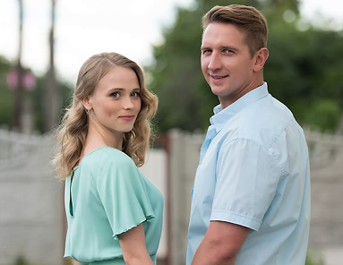
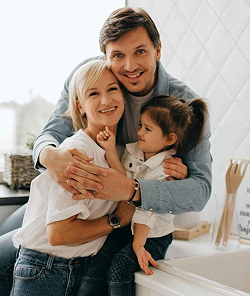

Брендбук города
Ульяновск
«Мы так глубоко вросли корнями у себя дома, что куда и как надолго бы я ни заехал, я всюду унесу почву родной Обломовки на ногах, и никакие океаны не смоют её!»

Структура
1 Концепция
Введение
О городе
Ульяновск — крупный город на Волге, административный центр Ульяновской области России, с населением около 626 тысяч человек 2025 года.
Основан в 1648 году как крепость Синбирск. До революции 1917 года старинный Ульяновск ― Симбирск ― именовали «дворянином на Волге». Позже Симбирск переименован в 1924-м в честь Ленина, родившегося здесь.
Ульяновск — крупный промышленный центр Поволжья, где основную роль играет машиностроение и металлообработка. Город известен как площадка автомобилестроения, а также как важный центр авиастроения — здесь производят и собирают пассажирские и грузовые самолёты, а также авиационную технику и компоненты.
С 2015 года — Город литературы ЮНЕСКО единственный в России. Известен мемориалами Ленина, музеями Гончарова и Карамзина, набережной, Городом трудовой доблести.
Цели брендбука
Миссия. Ключевые сообщения
Миссия бренда
Создать цельный образ Ульяновска как дворянского города на Волге с богатым литературным наследием и живописной природой поволжского края.
Ключевые сообщения
Сокровища симбирцита и волжских берегов
Сообщения объединяют аристократическое литературное наследие Ульяновска с природой. Они передают образ города как элегантного, интеллигентного места с глубокими корнями и открытой душой.
Город литературы на Волге
Ульяновск — единственный в России город ЮНЕСКО по литературе. Здесь каждая улица хранит память о Гончарове, Карамзине и Ленине, а Волга становится фоном для культурного путешествия.
От Ленина к литературным вершинам
Город умеет переосмыслять своё прошлое и превращать его в живое культурное достояние. История здесь не застывает — она вдохновляет, удивляет и открывает новые смыслы для каждого гостя.
Задачи рекламной деятельности
Каналы коммуникации
Сайт обеспечивает контроль над брендовым контентом и планированием маршрутов, соцсети дают вирусный охват молодёжи, агрегаторы влияют на поисковые решения, сувениры продлевают коммуникацию после визита.
Основные задачи рекламной деятельности
Позиционирование. Ц/А
Позиционирование
Ульяновск — культурный город на Волге с богатым историческим наследием, благородным характером и особой атмосферой интеллигентности, уюта и достоинства.
Акцент на литературном наследии, дворянских традициях и исторических местах, а также на знакомстве с природой поволжского края.
Конкурентные преимущества
Литература
Единственный Город литературы ЮНЕСКО в России — уникальные музеи Гончарова, Карамзина и многих других.
Промышленность
Город является родиной легендарных брендов УАЗ и авиационного производства «Авиастар».
Уникальная природа
Уникальный минерал симбирцит, добываемый исключительно в окрестностях Ульяновска, и Волжская набережная.
Историческое наследие
Как родина В.И. Ленина, Ульяновск располагает крупнейшим в мире мемориальным комплексом, дополненным дворянским наследием Симбирска.
Целевая аудитория

Возраст: 25–34
Семейное положение: чаще не состоят в браке / пары без детей
Увлечения: визуальная эстетика, необычные маршруты, атмосферные места, гастрономия, культурные смыслы, места с историей, эмоции и уникальность
Вид деятельности: IT, медиа, маркетинг, офисные профессии, фриланс, молодые специалисты
Регион постоянного проживания: крупные города России (Москва, СПб, Екатеринбург, Казань, Самара и др.)

Возраст: 30–39
Семейное положение: часто семейные / с детьми
Увлечения: спокойный туризм, достопримечательности, культура, понятные маршруты, семья-френдли формат, практичность
Вид деятельности: бизнес малого сегмента, торговля, производство, госслужба, офис
Регион постоянного проживания: ближайшие города и регионы Приволжского федерального округа
Название. Слоган. Креативная концепция
Название и слоган
По указу царя Алексея Михайловича для защиты русских земель от набегов кочевников в 1648 году приближенным к нему боярином Богданом Матвеевичем Хитрово был основан город-крепость Синбирск. Название города пошло от одноимённого городища, построенного булгарским князем Синбиром. С 1780 года город был переименован в Симбирск.
Владимир Ильич Ульянов-Ленин родился и провёл в Симбирске первые 17 лет своей жизни. Город в честь него был переименован в 1924 году в Ульяновск.
«Город, где хочется летать» — это образ места, которое вдохновляет на движение вперёд, поддерживает мечты и ассоциируется с авиацией Ульяновска, свободой и развитием.
Креативная концепция
Выделить Ульяновск как культурный город с богатым историческим наследием, особой интеллигентной атмосферой и благородным характером, отсылая к его образу как «дворянина на Волге».
Бренд города Ульяновска стремится представить себя как утончённый, культурный и гостеприимный город, уважающий свою историю, традиции и духовные ценности. Креативная концепция направлена на создание образа города, в котором соединяются величие прошлого, культурная глубина и современная городская жизнь.
Ульяновск воспринимается как город, где история не теряет своей значимости, а становится частью живого и развивающегося настоящего.
Брендинг стремится к гармоничному сочетанию исторической глубины, эстетики и современного развития. Уникальные черты Ульяновска — его культурная среда, литературные и исторические ассоциации — становятся неотъемлемой частью образа бренда, подчёркивая, что город гордится своим прошлым и сохраняет его значение в настоящем.
Визуальная стратегия
Описание визуального языка бренда
Всё визуальное оформление — логотип, иллюстрации и паттерн — выдержано в простых геометрических формах, с лёгким сказочным и символичным характером, без перегруженности деталями.
В основе визуальной стратегии брендинга Ульяновска лежит сочетание фирменных цветов. Синие оттенки ассоциируются с рекой Волгой и небом, кирпично‑красный — с исторической застройкой, оранжево‑жёлтый — с тёплым светом и деревянными фасадами, а белый фон создаёт ощущение простора и чистоты. Зелёный акцент в основном появляется в иллюстрациях, подчёркивая природу и зелёные зоны города.
Выбор шрифтов стремится к современности и читаемости: один акцентный, с мягкими геометричными формами, другой — более нейтральный, для текста.
Для иллюстраций, паттерна и оформления мерча применяется шумный градиент, который добавляет фактурность и мягкую динамику.
В логотипе и паттерне органично вплетаются ключевые символы города — Волга, литературные и исторические места, камень симбирцит, отсылки к авиастроению, автопрому, яхтингу и местным традициям.
Эмоциональная окраска
Визуальный стиль Ульяновска звучит как дружелюбный, человечный и немного романтичный образ: город, в котором чувствуются и история, и повседневная жизнь, где каждый находящийся здесь может по‑своему прочувствовать атмосферу дворянского города на Волге.
2 Визуальная система
Логотип


О логотипе
Логотип состоит из знака и текстовой части.
Логотип составлен из узнаваемых символов города, таких как: музей И.А. Гончарова, Стелла, Ульяновский областной краеведческий музей, река Волга и уникальный камень симбирцит как кончик волны.
Логотип символизирует литературные и культурные корни города, а так же приволжскую природу с минералами.
Шрифт подобран Arsenal SC Bold — современный полугротеск. Жирное начертание придаёт надписи вес.


Построение знака
Геометрическое построение выполнено из простых фигур: квадрата и круга, так же использовалась фигура звезды.
За основу взята модульная сетка с базовым шагом 1. Основные пропорции определены отрезками. Эти значения задают положение ключевых узлов и границ композиции.
Направления ломаных линий заданы системой углов.
Волна, закругляющаяся в камень симбирцит, построена по принципу, вдохновленному золотым сечением. Её форма не является строгой математической спиралью, но следует логике плавного нарастания радиуса, характерной для природных узоров симбирцита.

Построение логотипа
Сетка используется та же, что и для построения знака.
Центр буквы «У» находится на 1 уровне с границей элемента в логотипе.

Все версии
Для городского бренда важно иметь несколько версий логотипа, потому что он используется в самых разных условиях: от официальных документов и вывесок до мерча, сайта и международных мероприятий. Русская и английская версии, а также варианты с подстрочником и без него позволяют гибко работать в разных форматах и для разных аудиторий.
Горизонтальные и вертикальные ориентации, а также цветные и чёрно‑белые варианты обеспечивают читаемость и узнаваемость логотипа на любых фоновых поверхностях и носителях. Это делает логотип универсальным инструментом бренда, который легко адаптировать под любую ситуацию без потери качества и смысла.

Охранное поле
Сетка используется та же, что и для построения знака.
Вокруг логотипа должно оставаться свободное пространство, которое необходимо, чтобы визуально отделить его от соседствующей графики или текста.
Размеры охранного поля рассчитываются исходя из высоты буквы «У» в надписи. Для горизонтальной версии достаточно высоты 1 буквы, для вертикальной минимум 2х высоты от буквы.

Минимальные размеры
Минимальный размер логотипа — наименьший допустимый, при котором знак и надпись остаются читаемыми и узнаваемыми. При уменьшении ниже установленных значений детали знака сливаются, текст становится нечитаемым.
Для цифровых носителей (сайт, соцсети, интерфейсы) минимальная ширина горизонтального логотипа — 160 px, вертикального — 80 px. Для печатной продукции минимальная ширина горизонтального логотипа — 40 мм, вертикального — 20 мм.
Использование логотипа меньше указанных значений недопустимо.
Ошибки при использовании

Искажены пропорции

Другой шрифт

Контурный логотип

Логотип окрашен в посторонние цвета

Малая контрастность логотипа и фона

Неправильное сочетание цветов

Разные цвета у надписи и подстрочника
Цветовая система
Основные цвета
Дополнительные цвета для иллюстраций
Цветовые сочетания
Типографика
Заголовок
Используется для логотипа, заголовков, подзаголовков и акцентов в тексте. Используется только в жирном начертании (bold).
Аа Бб Вв Гг Дд Ее Ёё Жж Зз Ии Йй Кк Лл Мм Нн Оо Пп Рр Сс Тт Уу Фф Хх Цц Чч Шш Щщ ъ ы ь Ээ Юю Яя
Aa Bb Cc Dd Ee Ff Gg Hh Ii Kk Ll Mm Nn Oo Pp Qq Rr Ss Tt Vv Xx Yy Zz
123456789 !:?№*
Основной шрифт
Используется для основного текста и деловых документов. Используется в тонком (light), нормальном (regular) и жирном (bold) начертаниях.
Аа Бб Вв Гг Дд Ее Ёё Жж Зз Ии Йй Кк Лл Мм Нн Оо Пп Рр Сс Тт Уу Фф Хх Цц Чч Шш Щщ ъ ы ь Ээ Юю Яя
Aa Bb Cc Dd Ee Ff Gg Hh Ii Kk Ll Mm Nn Oo Pp Qq Rr Ss Tt Vv Xx Yy Zz
123456789 !:?№*
Пример
РазмерТипографика формирует характер коммуникации. Правильный выбор гарнитуры — это выбор интонации.
Графические элементы


Построение
Геометрическое построение выполнено из простых фигур: квадрата и круга, так же использовалась фигура звезды.
За основу взята модульная сетка с базовым шагом 1. Основные пропорции определены отрезками. Эти значения задают положение ключевых узлов и границ композиции.
Направления ломаных линий заданы системой углов.


Все версии
Логотип составлен из узнаваемых символов города, таких как: Стелла (цвет янтарный), Ульяновский областной краеведческий музей (цвет волжский синий), диван «Обломова» (цвет небо) и музей И.А. Гончарова (терракотовый цвет).
Паттерн

Построение
Паттерн построен на модульной сетке с базовым шагом 1. Каждый элемент вписан в квадратный модуль, что обеспечивает равномерность и масштабируемость узора.
Композиция допускает свободное кадрирование: паттерн одинаково читается в любом фрагменте и не имеет явно выраженного центра.
Эффект шума добавлен поверх геометрии и присутствует во всех вариантах, создавая фактуру живого города.


Все версии
Паттерн представляет собой собрание символов Ульяновска: Буква Ё, самолётостроение, музей И.А. Гончарова, Стелла, Ульяновский областной краеведческий музей, река Волга, уникальный камень симбирцит, яхтинг, УАЗик буханка, диван Обломова.
В паттерне присутствует эффект шума, который есть и на иллюстрациях.


Использование паттерна
Яркий паттерн предназначен для внешних носителей: он привлекает внимание широкой аудитории. Можно использовать паттерн целиком или брать отдельные блоки, выстраивая их в горизонтальную полосу. Блоки расположены по квадратной сетке — ряды выровнены ровно друг под другом.
Деловой паттерн используется в корпоративной документации. Его отличительная черта — кирпичная раскладка: каждый ряд блоков сдвинут на полшага вправо относительно предыдущего. Так же можно использовать паттерн целиком или выстраивать блоки в линию.
Иллюстрации
Карта

Иллюстрированная карта охватывает исторический центр Ульяновска и включает 11 объектов: площадь 30 лет Великой Победы, Музей балалайки, Волжский яхт-клуб, Гостиницу «Венец», Ленинский мемориал, Музей И.А. Гончарова, Памятник букве «Ё», Симбирцитовую Залу, Спасско-Вознесенский собор, Художественный музей и Церковь Св. Марии. Карта интерактивна: при нажатии на объект появляется его краткое описание.
Графический стиль карты строится на шумовом эффекте и градиентах — именно они объединяют иллюстрацию с остальной визуальной системой бренда. Городская среда передана через зелёные оттенки: деревья, парки и кварталы прочитываются как живая ткань города. Силуэты зданий намеренно упрощены — узнаваемы, но без архитектурной детализации.


Маршруты
Все три иллюстрации выполнены в едином стиле: шумовой эффект и мягкие градиенты связывают их с общей визуальной системой. В левом верхнем углу каждой намеренно оставлено свободное место — для заголовка маршрута и его параметров.
Каждая иллюстрация говорит символами своего маршрута. Литературная прогулка — Дом Гончарова, портрет писателя и буква «Ё» как отсылка к Карамзину. Дворянин на Волге — парусная яхта, широкая река и Президентский мост. Город семи ветров — силуэт самолёта как символ авиастроения, Аленький цветочек и Ветровой орган у моста.